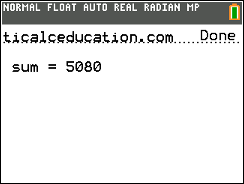
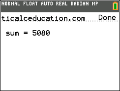
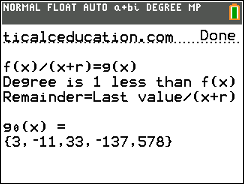
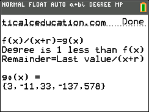

To download, click either m.8xp or c.8xp, depending on your calculator model. For info on that, click here.
Chi-Squared Test | m.8xp | c.8xp
Calculates the chi-squared value given the input of degrees of freedom, observed values, and expected values.
Conic Sections | m.8xp | c.8xp
Calculates circular, parabolic, elliptical, and hyperbolic centers, foci, vertices, asymptotes, and other section-specific information given the input of any conic equation format and it's coefficients.
Distance and Midpoint Formulas | m.8xp | c.8xp
Calculates the two-dimensional or three-dimensional distance and midpoint between two inputted coordinates in the plane.


Electric Forces, Fields, and Potentials | m.8xp | c.8xp
Calculates the value of electric forces, fields, and potentials with the option for an unknown value; uses several algebraic formulas in electricity physics.
Euler's Method | m.8xp | c.8xp
Utilizes the STAT lists to give a rate of change approximation table using Euler's Method given the inputs typically provided in an Euler's problem.
Hardy-Weinberg Principle | m.8xp | c.8xp
Calculates Hardy-Weinberg population calculations: frequencies of dominant and recessive alleles as well as frequencies of each genotype combination.
Heats of Formation | m.8xp | c.8xp
Calculates the heat of formation of a chemical reaction given the input of reactants' and products' chemical formulas. Has stored the values of around 100 common compounds in a general chemistry course; different states of matter other than H2OG and H2OL are excluded, and charges are excluded.
Integral Applications | m.8xp | c.8xp
Calculates the average value of a function over an interval, the area between two curves (with the option for unknown bounds), and the volumes of solids of revolution all given the input of functions and boundaries.
Kinematics Formulas | m.8xp | c.8xp
Calculates the time, velocity, distance, or acceleration value in any of the three algebraic kinematics equations given the input of the other values.
Kinetics Experiments and Half-Lives | m.8xp | c.8xp
Calculates the constant k and orders of reaction with respect to reactants given the information in a three-experiment table; additionally, computes half-life values.
Newton's Method | m.8xp | c.8xp
Estimates a function's nearest root using Newton's Method with the input of an intial guess and number of iterations.
nth Derivative | m.8xp | c.8xp
Estimates the nth order derivative of a function at an inputted x value using TI's nDeriv command nested several times over; expect error.
Partial Derivatives | m.8xp | c.8xp
Calculates the partial derivatives of a two-variable function in the direction of x and y, the second partials taken in all directions, and the value of d to determine extrema and saddle points.
Quadratic, Cubic, and Quartic Formulas | m.8xp | c.8xp
Solves and factors second through fourth degree polynomials given the input of their coefficients. Change your [mode] to a+b𝒾 to view nonreal answers.
Quadratic Formula | m.8xp | c.8xp
Solves and factors second degree polynomials given the input of it's coefficients. Change your [mode] to a+b𝒾 to view nonreal answers.


Estimates the area under a curve using Riemann Sums with left, right, center, or trapezoidal endpoints given inputs of bounds and number of figures.
 

Shapes and Figures | m.8xp | c.8xp
Calculates anything from areas to volumes to diagonals to radii of a myriad of two-dimensional and three-dimensional shapes and figures.
Significant Figures | m.8xp | c.8xp
Counts the number of significant figures in an inputted numerical string.
Square Root Simplifier | m.8xp | c.8xp
Simplifies a square root given without a coefficient.
Calculates the molar mass, moles, mass, volume, and amount for compounds made up of the 50 most common elements seen in a general chemistry course.
Synthetic Division | m.8xp | c.8xp
Performs synthetic division on an inputted function's coefficients based on an also inputted binomial's constant to divide with. The quotient is outputted as it's coefficients.
 

Taylor and Maclaurin Estimates | m.8xp | c.8xp
Estimates the value of an inputted function based on the inputted center, point of interest, and order. To estimate higher order derivatives, this program uses TI's nDeriv command nested several times over, so expect error.

Calculates every piece of valuable information about a triangle including area, perimeter, side lengths, and angles based on the choice of triangle knowns and the inputs of the knowns.
)
C
Y